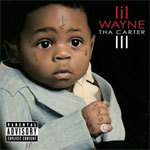
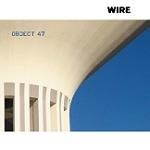

Top 50 Albums of 2008 (Part One)
2008 seems to have passed by in a blur. I’m at a loss to explain why, although the fact that we spent its first four months preparing for the perpetually delayed launch of our new website might have something to do with it. Some critics would suggest it’s because 2008 has been a barren year for exciting new music, but – as ever – I have to disagree vehemently with this outlook. There is always great music around; it’s just a case of how far beneath the surface you’re willing to scratch.
When asked to vote for their favourites, our team of writers put forward solid arguments for well over 200 different albums, and I’m sure that some of this year’s omissions would have walked into the Top 50 in years gone by. I’m sure you’ll have your own views on the records that made the cut and those that didn’t; please use our comments facility to praise, criticise and abuse us ‘til your heart’s content. We can take it.
Below you will find albums #50 to #26. To view our top 25, please click here. -- David Coleman, Editor
. . .
 50. Randy Newman
50. Randy Newman
“Harps and Angels”
(Nonesuch)
Original review - Buy it from Insound
I hate it when someone is called a 'national treasure', but damned if it doesn't apply in this case. He's still writing the book on heartbreaking ballads with Losing You, and he remains untouchable in the irony sweepstakes. It's nice to hear that someone still cares about matching word to melody and harmony, and the young'uns could learn a thing or two on this score. People complain that his New Orleans shuffle always sounds the same but on the contrary, I don't think I heard a more musical release this year. (Alan Shulman)
49. Kanye West
“808s & Heartbreak”
(Roc-A-Fella)
Buy it from Insound
808s & Heartbreak was music criticism's Synedoche, New York. Like the Charlie Kaufman film, the latest Kanye record confused both reviewer and fan. Nobody knew exactly what to do with it. Those that hated it couldn't help being curious. Those that loved it sometimes questioned if it was really that brilliant or just bold. Here at the No Ripcord HQ we're not sure yet either, so you may view Kanye's spot on this list as tentative. But then again, any contemporary hip hop artist that has the balls to completely disregard the expectations of his audience deserves at the very least a pad on the shoulder. (Japie Stoppelenburg)
48. The Sea and Cake
“Car Alarm”
(Thrill Jockey)
Buy it from Insound
Car Alarm may not be a major diversion for Chicago's the Sea and Cake, but that's fine by me; taut, intelligent and cohesive, this is another accomplished release from one of the most underrated bands of the last 15 years. And if you’re yet to acquaint yourself with the Sea and Cake, it also doubles as the ideal introduction. (David Coleman)
47. Ratatat
“LP3”
(XL)
Buy it from Insound
Ratatat is one of the most immediately engaging and surprisingly enduring acts of today. LP3 does not hit the immediate pleasure zone or the timeless durability of its last album, Classics, but it does stretch out their longevity by taking the formula in new, spacier directions. To this day, nobody can phase a guitar like they can, and I have friends who have tried. Most people haven't noticed yet that Ratatat is hip-hop, but they are pioneers of one of the many bright futures in the multiverse that is post-millennial hip-hop. (George Booker)
46. Titus Andronicus
“The Airing of Grievances”
(XL)
Buy it from Insound
It's not surprising to find Neutral Milk Hotel listed in Titus Andronicus' MySpace page as one of their influences. I don't say this because of any specific musical similarities (although the opener is a distant cousin of Ghost), I say it because there is an urgency and a sense of unbridled, youthful exuberance that permeates The Airing of Grievances that is in the vein of Jeff Mangum's In the Aeroplane Over the Sea. Paradoxically, Mangum's statement is an affirmation of life (and life after death) while The Airing of Grievances is downright nihilistic. Maybe this tension is the reason I kept going back to this record throughout the year. Well that, and the kick ass riffs and angry rants of a drunken 22-year-old New Jerseyan. (Alejandro Martinez)
 45. Fucked Up
45. Fucked Up
“The Chemistry of Common Life”
(Matador)
Original review - Buy it from Insound
As the punk genre continues to wane, showing preference to a weak and poppy variation to its once brutal and iconoclastic self, Toronto's Fucked Up (as its bold name suggests) is a return to integrity. Their latest album, The Chemistry Of Common Life, synthesizes a lot of ideas into a very roots-oriented and enlivening homage to 80s hardcore, bringing back the stompy snarl of Sick Of It All and the overt bloodlust of GG Allin. It’s blood and sweat with style, utilizing some very smart and unusually diverse methods of musical pulverization. The album’s content is admittedly rife with the age-old and familiar points of contention, but the passion wins out. (Sean Caldwell)
 44. Magnetic Fields
44. Magnetic Fields
“Distortion”
(Merge)
Original review - Buy it from Insound
It's quite a departure from the days of 69 Love Songs, but Distortion is a fun, noisy record which boasts some of the best songs Stephin Merritt has written in years. California Girls, which sounds like the Jesus and Mary Chain covering the Beach Boys, is an obvious stand out, but spend some time with this underrated record and you'll be quoting Merritt's lyrics along with the best of them. (David Coleman)
43. Lindstrom
“Where I Go You Go Too”
(Smalltown Supersound)
Original review - Buy it from Insound
Space-disco has been making waves with underground connoisseurs for some time. On this three-track longplayer, Hans-Peter Lindstrom's Norwegian roots help inform a suitably crisp style that should be as enjoyable for ambient/IDM heads as it is for fans of the classic Moroder school of Italo. The title track clocks in at just shy of 30 minutes yet not for a moment do you find yourself getting bored; there's always something to latch onto in the rich layers of melody. Whilst Grand Ideas is also a fine piece of work, Lindstrom bizarrely slaps in some dodgy euro-funk midway through The Long Way Home - a faux-pas that really spoils the overall feel of a record that otherwise manages to successfully straddle retro-futurist disco limits. (Jody White)
42. MGMT
“Oracular Spectacular”
(Columbia)
Buy it from Insound
A robust debut of super-saturated anthems adorned with a glittery sheen, this electrified collection of tracks have duo VanWyngarden and Goldwasser alluding Ziggy Stardust-era Bowie and at times glam-rocker combatants T.Rex. Unabashedly toggling between juvenile optimism and lyrics of costumed frivolity, MGMT’s hyperbolic style often comes across as a tongue-in-cheek articulation of the ideas they put forth. Meanwhile, their steaming penchant for feverish electro-pop has brought them into the mainstream eye. Quite simply; with such clever arrangements and comic-space-age hooks, who hasn’t thought about roller-skating to this. (Tara Campbell)
41. Last Shadow Puppets
“The Age of the Understatement”
(Domino)
Original review - Buy it from Insound
While I fear I'll never quite be able to appreciate the charm of the Arctic Monkeys, this charming little record did force me to acknowledge the fact that Alex Turner is a pretty talented songwriter. Working with his relatively unheralded mate, Miles Kane, Turner used the Last Shadow Puppets moniker to issue an album of lush, orchestral pop music, heavily inspired by late 60s work of Scott Walker. Bustling with horns, strings and elaborate percussion tracks, the whole record has a broad, cinematic feel that spectacularly outshines the compressed, modern rock sound of Arctic Monkeys. Here's hoping Turner packs in the day job and explores this apparent side project further. (David Coleman)
40. Lil Wayne
“Tha Carter III”
(Cash Money)
Buy it from Insound
Tha Carter III pulled a ton of pre-release hype, and it might not be the classic it was built up as, but there’s no denying the album is an opus. Clocking in obnoxiously close to the 80-minute CD limit, Mr. Carter’s 16 understated, album-oriented rap tracks are fit for headphones listening as well as the dance floor. III drips with wit and humor, as Weezy injects plenty of irony into tracks like Mrs. Officer and Dr. Carter, leaving the record both swanky and wry. (Conor McKay)
39. Mercury Rev
“Snowflake Midnight”
(V2)
Buy it from Insound
Ten years on, Deserter's Songs continues to set the bar for bands with spacefaring ambitions and a beatific bent, but the long wilderness period that followed its successor All Is Dream suggested that perhaps those heights were no longer within the Rev's grasp. We needn't have worried: their seventh album is a glistening return to form, all sunshine and bleeps on Snowflake In A Hot World and the amazing Senses On Fire, blurry semi-conscious lusciousness on October Sunshine, and giddy widescreen sense of wonder on Dream Of A Young Girl As A Flower. It's one of the year's most assured comebacks, and one of its most reassuring records too. (Iain Moffat)
38. David Byrne & Brian Eno
“Everything That Happens Will Happen Today”
(Self-released)
Buy it from Insound
The work of two older men, more comfortable and settled than at any time previously. If this makes you worry that this album will be dull, tedious, self-satisfied or jejune, then don’t worry; it’s actually warm, careful, mature and thoughtful. The wonderful opener Home is surely one of the songs of the year, Byrne’s enveloping vocals sweeping over rich Eno instrumentation. It’s pastoral, hopeful, and completely beguiling. This album won’t change music, it won’t be seen as a landmark, and those hoping for My Life in the Bush of Ghosts 2 may as well leave now. None of this stops the album from being affecting, touching and a total pleasure. (Alan Garner)
37. Of Montreal
“Skeletal Lamping”
(Polyvinyl)
Original review - Buy it from Insound
My initial enthusiasm may have subsided a little, but Skeletal Lamping remains, in my humble opinion, an enchanting and brilliantly weird record. The lyrics detail a garish and at times frighteningly sexual voyage through the darkest recesses of Kevin Barnes' mind, while musically Skeletal Lamping flirts with vintage Prince, disco and the electronically-enhanced pop of Scissor Sisters, flitting from one partially explored idea to the next in a manner that is two parts exciting, one part frustrating. It's not perfect, but that's half the charm, and if you can get past some of the dafter couplets ("Want you to be my pleasure puss, I wanna know what it's like to be inside you") there is a brave and experimental record here to enjoy. And if you gave up on Skeletal Lamping a few tracks in, for God's sake go back and listen to its' final track, Id Engager, which is, for my money, as perfect a pop song as you'll hear in 2008. (David Coleman)
36. Wire
“Object 47”
(Pink Flag)
Original review - Buy it from Insound
Post-punk pioneers, Wire, returned this year with Object 47, an enjoyable and heavily rhythmic mixture of danceable indie pop tunes (One Of Us), industrially inspired robotics (Hard Currency) and experimental bouts of musical eccentricity (Patient Flees). Bassist Graham Lewis, remaining prominent throughout the album, thickens the mesmerizing Circumspect and pushes some intensity into Mekon Headmen. Otherwise, singer/guitarist Colin Newman and drummer Robert Grey are both a testament to precision and post-punk perfection. Not necessarily out from the shadows of their most seminal work (the essential Pink Flag, Chairs Missing and 154), Wire still persevere and impress, continually finding ways to make simplicity sound complex. (Sean Caldwell)
35. Flight of the Conchords
“Flight of the Conchords”
(Sub Pop)
Buy it from Insound
Grammy award-winning New Zealand duo Bret McKenzie and Jemaine Clement compile their best songs for debut album Flight of the Conchords. Already a Platinum album, this collection of their most hilarious songs is raucous and silly throughout, with compositions always parodying popular genres of music. Think about It and Business Time are musts, and The Most Beautiful Girl (In the Room) is certainly chuckle worthy. The duo gets creative with electronic beats and synths in Boom and Mutha'uckas. All round varied and interesting, the album touches on every style and reference, while maintaining an ironic tone. If you haven't listened, now is your chance to crawl out from under the rock where you reside. Check out the live performances as well, to get a better idea of the "stand-up" comedy they include in their work. (Miguel Morelli)
34. Kaki King
“Dreaming of Revenge”
(Velour)
Buy it from Insound
Kaki King goes easy on the guitar slaps, but compliments her compositional prowess with a supportive set of musicians that complete the experience of Dreaming of Revenge. Her unique style is fully there, but this time more refined with beautiful singing along with the technical riffs. Those who enjoy King's singing will be pleasantly surprised with tracks like Saving Days in a Frozen Head, 2 O'clock and Life Being what it is for they are intimate, carefully crafted works of inspiration. Bone Chaos in the Castle and Air for Kilometers display her deft guitar skills. The music allows your mind to wander, not expecting you to follow the complexity of the composition. An evolved follow-up on her previous album ...Until We Felt Red, Dreaming of Revenge meets all the fans' expectations. Rated E for Everybody. (Miguel Morelli)
 33. Hercules and Love Affair
33. Hercules and Love Affair
“Hercules and Love Affair”
(DFA)
Original review - Buy it from Insound
I didn't pay attention to Antony until he was on Bjork's Volta, when I realized he has one of the finest and most distinctive voices of his generation. Then I continued to ignore his work with the Johnsons. Then he popped up on this marvel and I realized again that he has one of the finest and most distinctive voices of his generation. As talented as he is, he was lucky to contribute to this album, a pansexual post-disco dream that is a reminder of why rhythm will always trump melody, but its great when the two can get along. I want to send this album to every conflicted teenager around the world. You are not alone, mopey, and it is okay to dance! (George Booker)
32. Windy & Carl
“Songs for the Broken Hearted”
(Kranky)
Buy it from Insound
Husband and wife duo Windy & Carl have been crafting their dense, ambient landscapes for a while now, and Songs for the Broken Hearted is one of their strongest efforts. The few songs with vocals bury them below layers and guitar and synth, hidden; an inability to communicate. The album is about love; about heartbreak; it is frequently an intense and bleak affair, especially on tracks like the twelve-minute La Douleur, which makes the glint of sunshine on Rhodes all the more welcome. A rich, heavily textured album, Songs for the Broken Hearted demands much from the listener, but like all worthwhile exchanges, will give you just as much in return. (Alan Garner)
31. Mogwai
“The Hawk Is Howling”
(Wall Of Sound)
Buy it from Insound
Mogwai's sixth studio album saw the band tweak their frankly tiring formula, in the process producing their best work since Rock Action. The Hawk Is Howling's well defined sense of space contributes to a sound that still bears their trademark defiance, yet carefully moulds it into slow-burning grandeur rather than blistering noise. That said, Batcat hits you square in the face with a raw energy that has been absent for some time, while Local Authority drifts by (in the best possible sense), all aching guitars, delicate brushed snares and twinklin keys. While not their best work, it is both rewarding and comforting to hear a new Mogwai record that is really worth investing some time in. (Jody White)
30. Department of Eagles
“In Ear Park”
(4AD)
Buy it from Insound
Of all the great records 4AD had a hand in releasing this year, Department of Eagles’ second full-length, In Ear Park, probably grabbed the fewest headlines. Perhaps people confused them with the Eagles of Death Metal? Thankfully, there are no similarities between the two acts: this New York duo, which features Grizzly Bear’s Dan Rossen, specialises in a brand of ethereal folk that is a million miles away from the racket of Josh Homme’s band. Worth investigating. (David Coleman)
 29. Cut Copy
29. Cut Copy
“In Ghost Colours”
(Modular)
Buy it from Insound
Australian indie electro-pop trio Cut Copy released one of the best dance records of the year with In Ghost Colours. Seamlessly blending trippy, rave stylings with the pop sensibilities of ’70s disco and ’80s synth rock, Cut Copy manages to bridge the gaps between electronica, dance, trip-hop, and indie rock. In Ghost Colours sounds like the love child of French electronica stars Air and club robots Daft Punk, mixing DJ sampling techniques with electro-soundscapes behind well-crafted sing-along melodies. (Conor McKay)
28. Autechre
“Quaristice”
(Warp)
Original review - Buy it from Insound
On the frontier of electronic experimentalism, where few are bold enough to delight in the intricacies of samplers, sequencers, mixers and drum machines, is where Autechre makes its home. Quaristice drives the genre forward with the English group's characteristic cerebral composition and innovative, hand-made sounds. Tracks like Fol3I are authentic forays into the undiscovered realms of your eardrums, with filters phasing in and out, giving dimensions to the sound and taking them away. bnc Castl keeps a steady rhythm over distorted samples and electronic leads. Notwo shows sensitivity in its layers and harmonies. Autechre has again accomplished something that is beyond the scope of music; Quaristice stands proudly amongst the best albums of the year. (Miguel Morelli)
27. Beach House
“Devotion”
(Carpark)
Buy it from Insound
Beach House welcomes anyone and everyone into this surrealistic dream of an album. Devotion ebbs and flows effortlessly from one track to the next over simple drum machines, understated guitars and swathes of organ, perfecting a totally relaxed aural mood. It's easy to get lost in the rich voice of Victoria Legrand, especially in the dreamlike workings of Gila or Heart of Chambers. (Brett Oronzio)
26. Deerhoof
“Offend Maggie”
(Kill Rock Stars / ATP)
Original review - Buy it from Insound
Like master chefs conceiving delicacies from offal, Deerhoof has made a career out making superb records from all the discarded chords and scales most bands don't have the ear to exploit. Offend Maggie is the latest opus from a band that can seemingly explore dozens of new ideas in the space of 40 minutes without the inconvenience of ever having to sound like anyone but themselves. Twenty years form now we'll look at Deerhoof's run in this decade (Reveille / Apple O' / Milk Man / The Runners Four / Friend Opportunity / Offend Maggie) and be hard pressed to find its equal. I can already picture an interview in the year 2030 that goes something like this:
Interviewer: "So what were your influences for this album?"
Lead singer of hyped new band: "We were listening to a lot from this band called Deerhoof..."
Interviewer: "Oh yeah, they're great..."
Lead singer: "There's an album they recorded in the early 2000's called Offend Maggie…it's really fucking brilliant..." (Alejandro Martinez)
. . .
To view our top 25 albums of 2008, please click here.